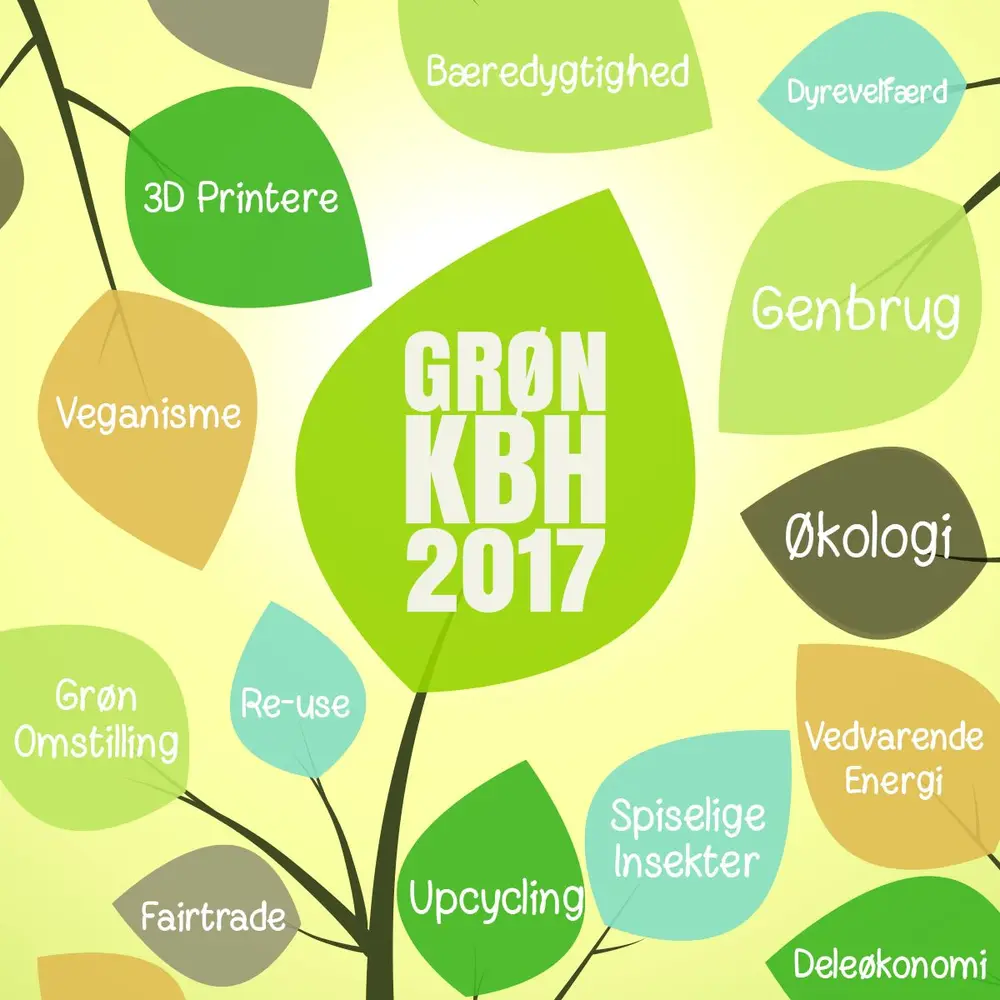

GreenSpeak og GRØN KBH
Udfordring
GreenSpeak manglede konkrete aktiviteter til at styrke salg, markedsføring og kendskabsgrad i en vækstfase.
Min rolle
Som medejer og Sales & Marketing Director stod jeg for salg, struktur og partnerskaber. Jeg førte bl.a. idéen om GRØN KBH ud i livet – en grøn messe i hjertet af København med over 40 deltagende virksomheder.
Resultat
Messen skabte værdifulde netværk, omsætning for deltagerne og fordoblede GreenSpeaks kundebase i perioden.